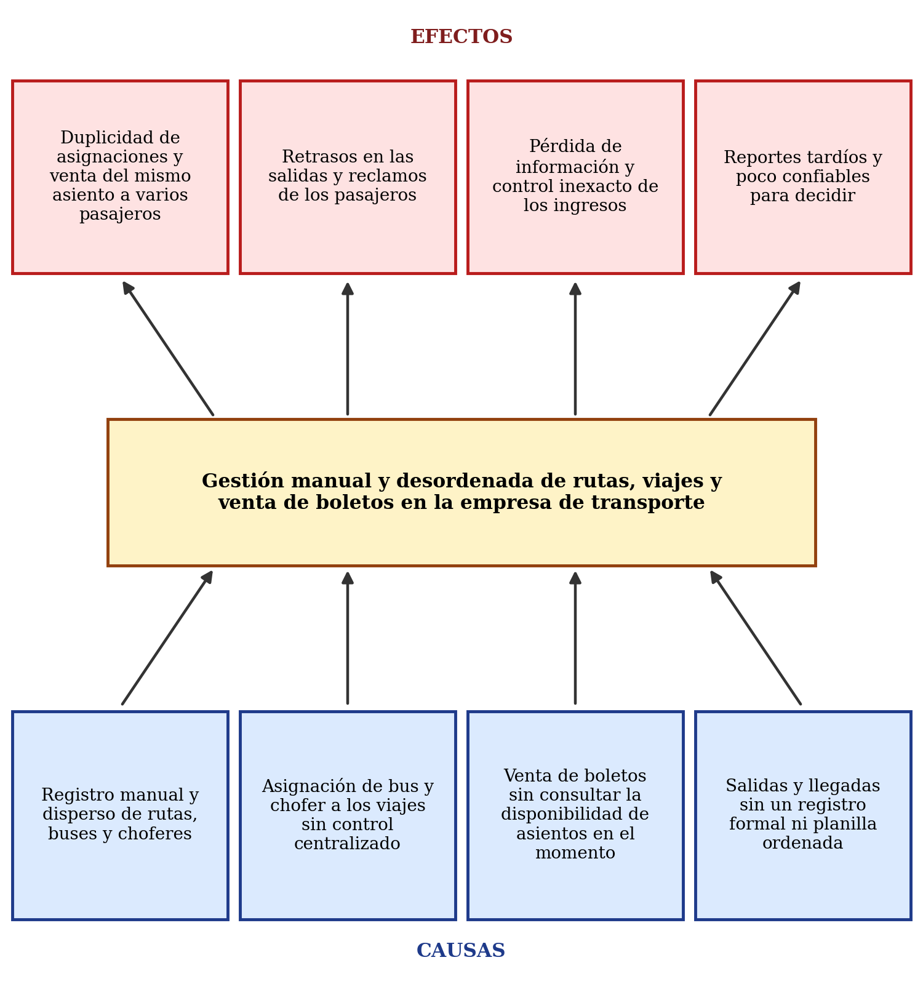

Marco teórico
Parte I: generalidades del proyecto. Es un borrador y lo seguimos revisando.
1. Introducción
Para vender pasajes, la empresa necesita que las rutas, los vehículos y los choferes estén bien coordinados y que cada asiento se venda una sola vez. Cuando todo se anota a mano y en distintos lugares, pasa que se asigna dos veces el mismo vehículo o se vende el mismo asiento a dos personas. Por eso en este trabajo modelamos un sistema que ordene esa operación, y lo hacemos con los dos paradigmas que vimos en la materia: el estructurado y el orientado a objetos.
2. Planteamiento del problema
Hoy la empresa anota las rutas, los vehículos y los choferes a mano y en distintos lugares. Los viajes se asignan sin un control único, los boletos se venden sin ver al momento qué asientos quedan libres y las salidas y llegadas no se registran de forma ordenada. Además, los reportes se hacen tarde y con datos incompletos.
2.1 Árbol de problemas

3. Formulación del problema
¿De qué manera un sistema de información analizado y diseñado bajo los paradigmas estructurado y orientado a objetos puede controlar las rutas, los vehículos, los choferes y la venta de boletos, para que los viajes se programen y registren de forma ordenada y sin duplicados?
4. Objetivos
4.1 Objetivo general
Analizar y diseñar un sistema de información que controle rutas, vehículos, choferes y venta de boletos de la empresa de transporte, aplicando el Análisis Estructurado y el paradigma Orientado a Objetos con UML.
4.2 Objetivos específicos
- Identificar eventos, actores y requerimientos con el modelo ambiental.
- Modelar procesos y datos con DFD por niveles, diccionario de datos, especificaciones de procesos y modelo de datos.
- Modelar el sistema con UML: casos de uso, clases, secuencia, actividades y estados.
- Diseñar la base de datos y las interfaces principales.
- Publicar el trabajo de forma iterativa e incremental y elaborar el documento impreso según las normas.
5. Método y herramientas
Nuestra investigación es aplicada, de nivel descriptivo y de diseño. Para recoger información usamos la observación directa, entrevistas al administrador, al boletero y a los choferes, y la revisión de planillas, boletos y facturas. En cada iteración levantamos información, hacemos el modelo, lo revisamos con el docente y lo publicamos aquí.
6. Cronograma propuesto
| Actividad | Fechas |
|---|---|
| Parte I: generalidades y marco teórico | 19 al 25 de octubre |
| Blog, publicación de la Parte I y avances de la Parte II | hasta el 29 de octubre |
| Parte II: diccionario de datos, especificaciones de procesos y modelo de datos | 26 de octubre al 15 de noviembre |
| Parte III: casos de uso, clases, secuencia, actividades y estados | 2 al 29 de noviembre |
| Diseño de la base de datos y de las interfaces | 16 al 29 de noviembre |
| Integración, revisión e impresión del documento | 23 de noviembre al 6 de diciembre |
| Publicación de la URL, entrega impresa y defensa | 8 de diciembre |